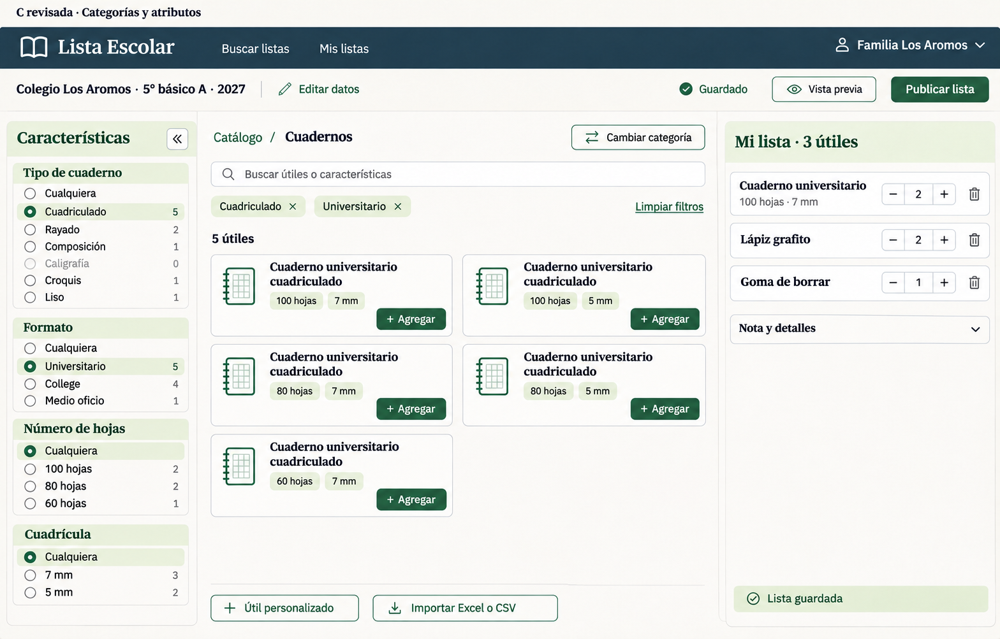
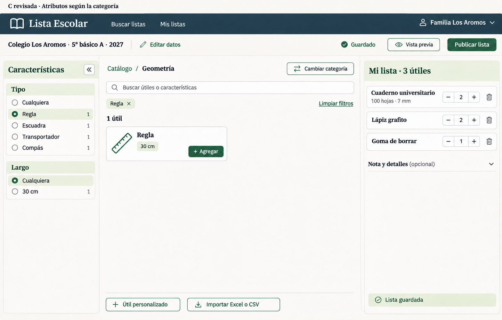

Cuadernos
Tipo de cuaderno, formato y número de hojas. Cuadrícula y orientación aparecen cuando son relevantes. Se conservan las diferencias entre Croquis, Liso, Composición y Caligrafía.
La opción elegida, refinada con una regla común para todo el catálogo: elegir una categoría y filtrar por sus características. Los tipos dejan de ser un nivel de navegación.
Categoría → atributos relevantes. Sin fila de subcategorías. Drawer a la izquierda, útiles al centro y la lista a la derecha. “Tipo” se combina con formato, hojas, largo u otras características cuando corresponda.
Cuadriculado y Universitario son filtros combinables. La ruta se mantiene en Catálogo / Cuadernos.

Tipo de cuaderno, formato y número de hojas. Cuadrícula y orientación aparecen cuando son relevantes. Se conservan las diferencias entre Croquis, Liso, Composición y Caligrafía.
Tipo: Regla, Escuadra, Transportador o Compás. Al elegir Regla se muestra Largo. La lista preparada permanece visible al cambiar de categoría.
